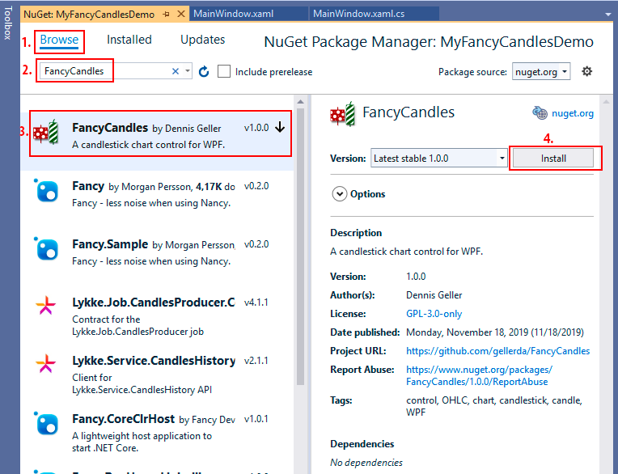
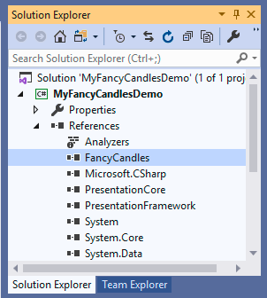
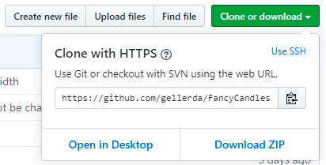

Consuming FancyCandles in your WPF (.NET Framework) project
To use the FancyCandles library in your project you have two options:
A) To install the FancyCandles NuGet package in your project.
B) To add the FancyCandles project to your solution.
If you are planning to change the source code of the FancyCandles library for your specific needs or to contribute to its open source project, then your choice is B. Otherwise, you don't need to be able to change the source code of the FancyCandles library, and your choice is A.
A) Installing FancyCandles NuGet package in your project
In Visual Studio Solution Explorer, right-click on References of your project and select Manage NuGet Packages....

In NuGet Package Manager select the Browse tab and type FancyCandles in the search box. Select FancyCandles from the list of filtered packages. Select a desired version of the FancyCandles package (the latest is recommended) and click the Install button.
Accept a license prompt.
If everything went successfully, Visual Studio installs the FancyCandles package into your project. Once the installation is complete, the FancyCandles package appears on the Installed tab of NuGet Package Manager, and in the References list of your project in Solution Explorer.

Now you can go on to create your first FancyCandles candlestick chart in your application.
B) Adding FancyCandles project to your solution
Clone or Download the FancyCandles repository to your computer.
Add the FancyCandles project to the solution of your project, which going to use the candlestick chart control:
- In Solution Explorer, right-click on the Solution of your project and select Add/Existing project....

- Select a path to the project file FancyCandles.csproj of the FancyCandles project (eg. .../FancyCandles/FancyCandles.csproj) and click Open.
- In Solution Explorer, right-click on the Solution of your project and select Add/Existing project....
Add to your project a reference to the FancyCandles project:
- Right-click on References under your project in Solution Explorer and click Add reference....

- In the Projects tab find the FancyCandles project row and check it. Click OK.

- Right-click on References under your project in Solution Explorer and click Add reference....
Now you can go on to create your first FancyCandles candlestick chart in your application.